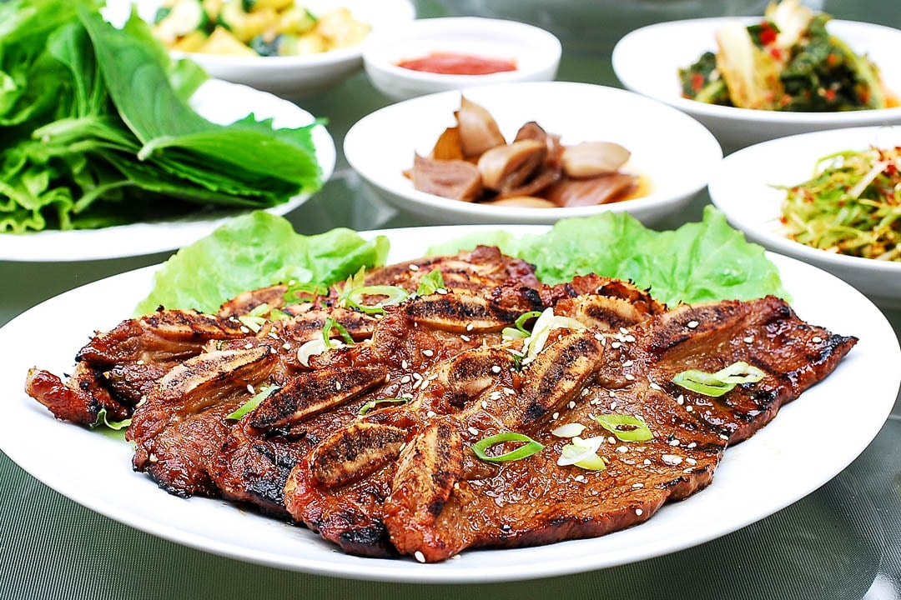

LA Galbi (Korean BBQ Short Ribs)

Description
Korean beef short ribs, a hallmark of korean cuisine that's made its mark in the West. Hence the adoption of the name LA (Los Angeles) Galbi.
Marinated with korean staples like soy sauce to create a sweet yet savory juiciness that will have you begging for more. Enough talk, let's begin!
Ingredients:
- ½ cup soy sauce
- ½ cup water
- ¼ cup sugar Reduce the sugar and add more pear or maesilcheong (Korean plum syrup) if you'd like!
- 2 tablespoons honey
- ¼ cooking rice wine (Korean matsul mirim or mirin)
- 2 tablespoons sesame oil
- ½ grated Korean or Asian pear If you chose the pear route from, blend your pear together with the next 3 ingredients!
- ½ medium onion, grated
- 2 tablespoons minced garlic (about 6 plump cloves)
- 1 teaspoon minced ginger (about 1 inch chunk)
- 3 scallions thinly sliced
- ½ teaspoon black pepper
- 1 teaspoon sesame seeds (optional)
Steps
Ingredient Preparation
Ribs:
- Rinse the ribs to wash off bone dust, and drain well. Pound the meat lightly with a meat tenderizer, or stretch it out with your hands. This helps tenderize the meat, but you can skip it if you'd like.
Marinade:
- Mix all marinade ingredients well. Marinate the meat for 6 – 8 hours (overnight for best results). The thicker the meat, the longer you’ll want to marinate.
Cooking the LA Galbi
- Preheat the grill over medium-high heat. Grill the short ribs, flip it over once with 2 – 3 minutes on each side. It’s best to grill over charcoal or wood charcoal. A gas grill or a grill pan over the stove top works great as well!
- Bon Appetit!
